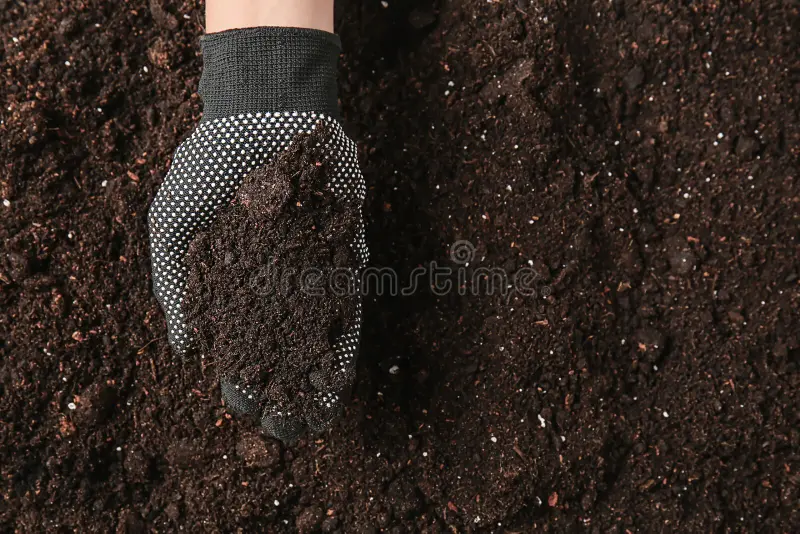

Fertilizers are used to replace the nutrients that crops remove from the soil. Involvement of a higher percentage of fertilizers reduces the soil's utility.
If you enter the details then it display Fertilizers of their respective crop
Advantages of organic Fertilizers over inorganic fertilizers

More Self sufficient soil Structure

less frequent fertilization
Protection of the environment and pets
long term savings using own compost
Thank you!
Click here to see more information